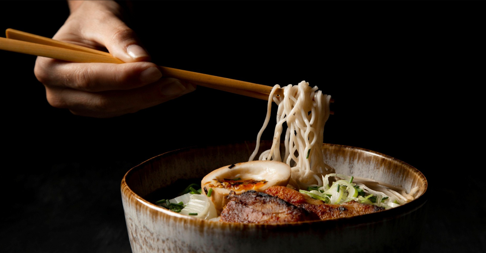
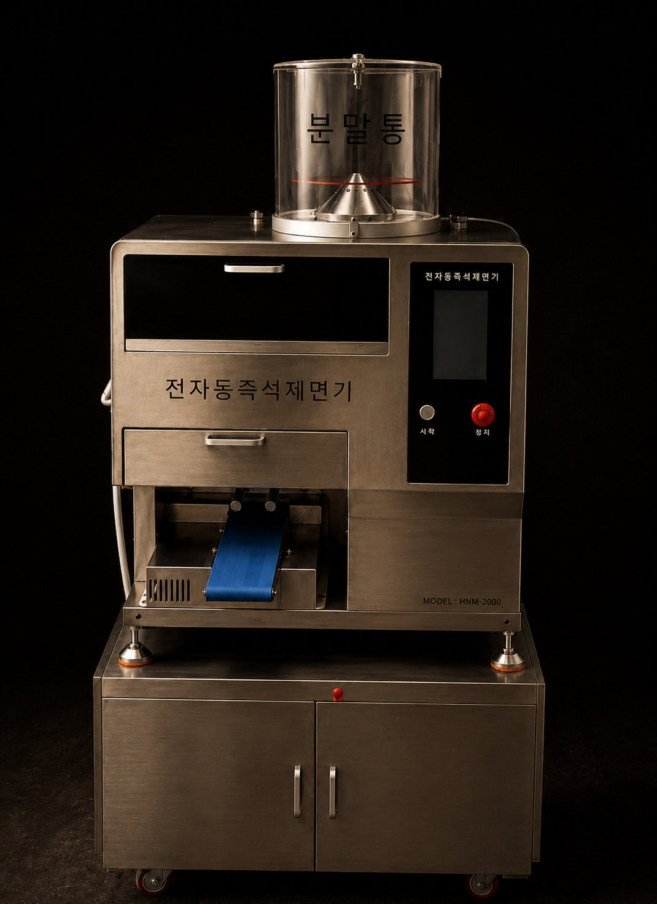

HNM-2000은 1인분 5초. 즉석 반죽부터 제면까지 버튼 하나로 — 면 만드는 기술이 없어도, 좁은 주방에서도 언제나 갓 뽑은 그대로.
가루와 물만 넣으면 계량·반죽까지 자동.
1인분부터 필요한 만큼. 다이얼로 수량을 맞춥니다.
5초에 1인분씩 갓 뽑은 생면이 그릇으로.
반죽을 그 자리에서 면으로. 시간이 지날수록 떨어지는 식감 없이, 손님 앞에 나가는 모든 그릇이 막 뽑은 생면입니다.

FRESH · 생면반죽 치고 면 뽑던 시간이 사라집니다. 피크타임에도 버튼 하나면 끝 — 사람은 손님 응대와 맛에 집중하세요.

HNM-2000 · 전자동 제면매장 규모와 메뉴에 맞는 모델을 1:1로 추천드립니다. 도입 비용과 절감 효과까지 숫자로 짚어드려요.
매장 후기가 들어갈 자리입니다. 실제 사장님 한마디를 넣어 주세요.
매장 후기가 들어갈 자리입니다. 실제 사장님 한마디를 넣어 주세요.
매장 후기가 들어갈 자리입니다. 실제 사장님 한마디를 넣어 주세요.